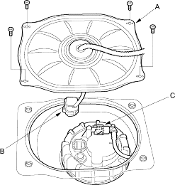
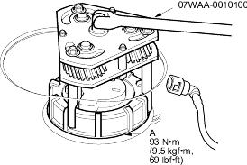
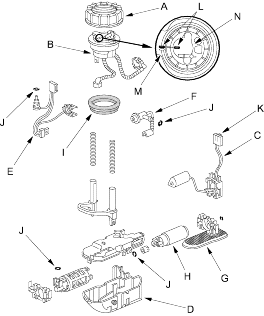

Adjustable ring wrench 07WAA-0010100
- Relieve the fuel pressure (see page 11-430).
- Remove the fuel fill cap.
- Remove the seat cushion (see page 20-237).
- Remove the access panel (A) from the floor.

- Disconnect the fuel pump 5P connector (B).
- Disconnect the quick-connect fitting (C) from the fuel tank unit.
- Using the tool, loosen the fuel tank unit locknut (A).

- Remove the locknut (A), the fuel filter (B), the fuel gauge sending unit (C), the case (D), the wire harness (E), and the fuel pressure regulator (F).

- When connecting the fuel tank unit, make sure the connection is secure and the suction filter (G) is firmly connected to the fuel pump (H).
- Install the part in the reverse order of removal with a new base gasket (I) and new O-rings (J), then check these items:
- When connecting the wire harness, make sure the connection is secure and the connector (K) is firmly locked into the place.
- When installing the fuel gauge sending unit, make sure the connection is secure and the connector is firmly locked into place. Be careful not to bend or twist it excessively.
- When installing the fuel tank unit align the marks (L) on the fuel tank (M) and the fuel tank unit (N).